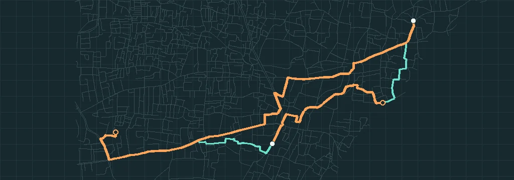
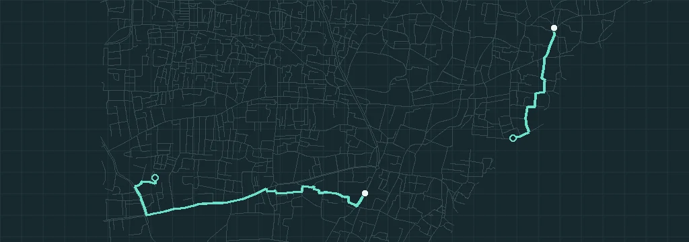
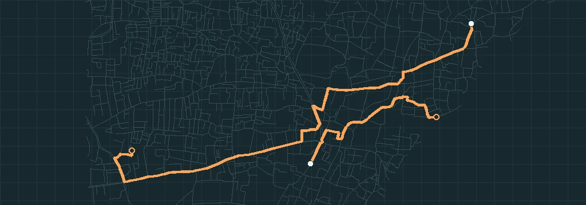

Varanasi dispatch simulator
2 emergency calls. 4 vehicles. Compare dispatch plans on Varanasi’s streets, then replay the assignments or try a road closure.



2 emergency calls. 4 vehicles. Compare dispatch plans on Varanasi’s streets, then replay the assignments or try a road closure.


